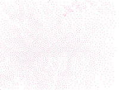

botany
you walk side by side between the rusted tracks as they disappear into the undergrowth. she’s tall, brushing unkempt branches up over her head where they’ve begun to re-embrace their kin across your path. wooded banks open up into a wide cutting, and in the center, a grand stone archway, pitted and mossy, with the tunnel sinking into the dark.
beyond the hearth, the tunnel walls become a charred brick, mingling with the shadows to suck even more light from the passageway, resisted only by the ageing paint-bucket graffiti splattered up the walls. you pace for a hundred meters or so along a wide arc, until the walls fall away and you stand in the furrow between two raised platforms.
the station is a broad, industrial victorian structure that extends almost out of sight, scaled along its length with glazed white tiles, barely visible below generations of soot and sprayed tags. the hall would be entirely subterranean if it weren’t for a series of wide ventilation shafts cut into the ceiling above, where the moon reaches through foliage to leave delicate grey pawprints down the tracks. the natural light is enough for a collection of curious plants to grow, hanging from the vents and huddled along the sides of the furrow.
the rain has mostly subsided for now, but the ground is still wet beneath your feet. she takes out a picnic blanket from her backpack and spreads it out below the open roof, lays on top, and you lie beside her, both in your coats, staring up at the partly-clouded sky.
“hm, this didn’t really help” she says.
“yeah no my butt is immediately soaking wet”
“and i’m gona have to carry this sodden blanket home… welp. my bad. i guess it’s softer than rubble at least”
“it’s like,, it works like a wetsuit, right, you’re supposed to warm up the layer of water next to your skin and then it acts as insulation”
“yeah, yes exactly, that’s exactly how blankets work”
“they should make them in neoprene”
a drizzle of rain blows off of one the branches above the skylight, dotting your face and legs, both of you affirming your discomfort with a stoic silence. swirls of stars peek through the patchy clouds above, ebbing with the shifting cover.
“an astronomer would probably call this a bad night for stargazing. but honestly i think it’s alright.”
“stargazing was never really about the stars anyway”
“mhm, just like, how kissing was never really about the lips”
a heavy black cloud engulfs the handful of stars you had been watching. another flurry of droplets falls from above, and this time you are intimately aware of where each lands: a few scattered across the front of your jacket. one on your upper thigh through your tight jeans. one on the side of your neck, splashing over your collarbone, and one on the ridge where your lower lip meets your chin, wetting the parched seal of your mouth. your subsequent silence is not one of discomfort, and your cheeks feel warm all of a sudden.
“h…uh…”
in your periphery she turns her head, observing you quizzically.
“…trees are good kissers. i think.”
“you think?” a smile in her voice.
she looks back up at the sky, then starts to sit up, offering you a hand. “the clouds are getting thick, we should pick this up before it starts raining properly again”.
